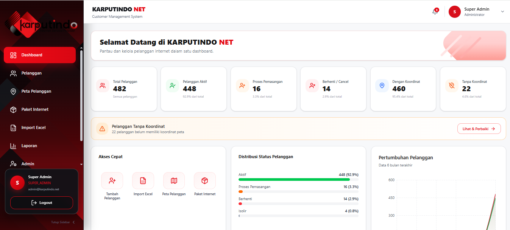
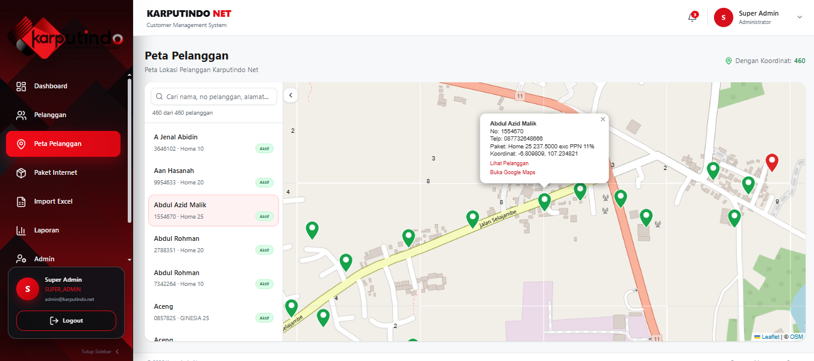
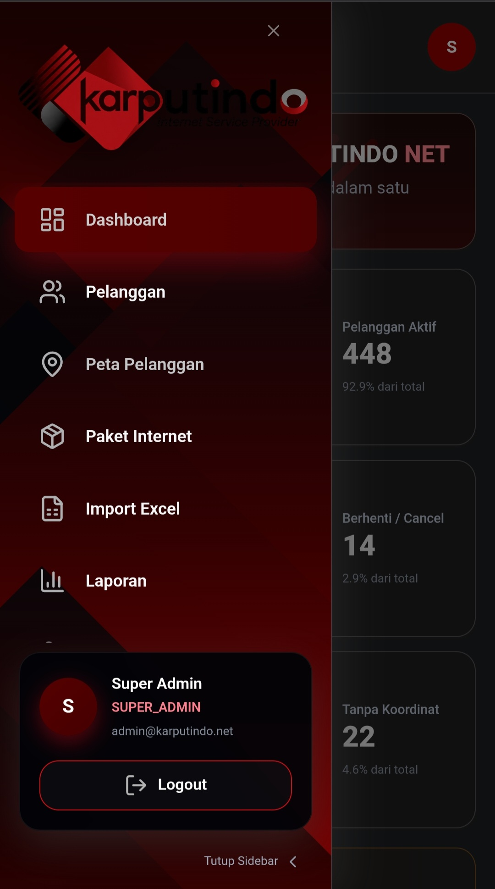
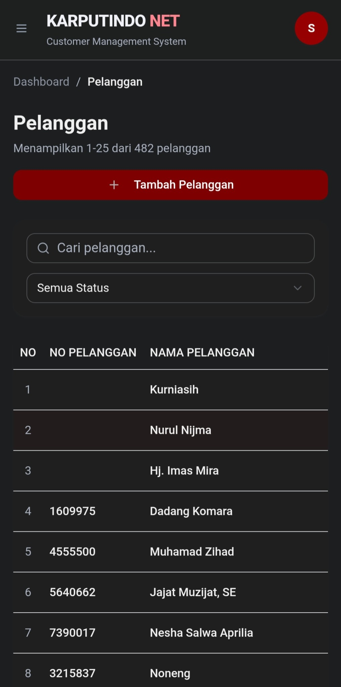
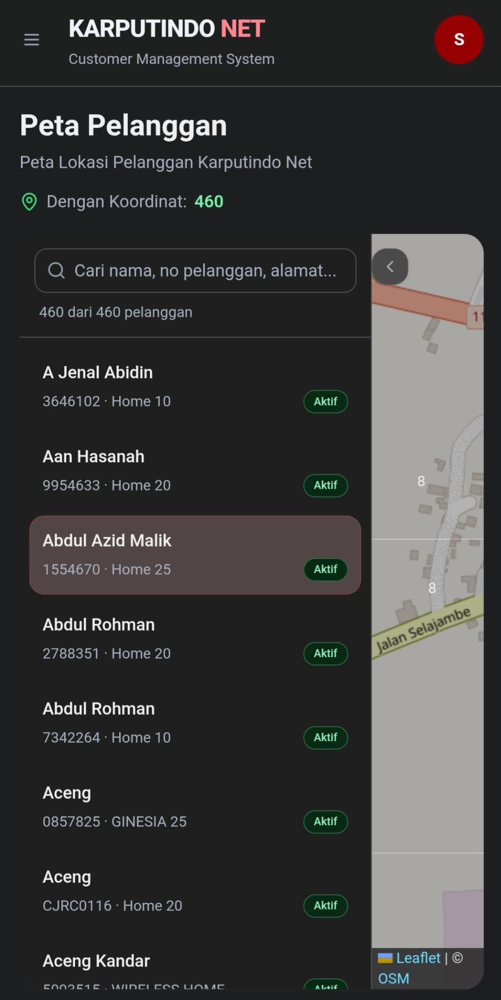

01
Customer Data & Mapping Platform
Live · Production ↗
Karputindo.net





A full-stack operational platform for internet service providers, combining customer records, package management, spreadsheet import, dashboards, and customer mapping.
Next.js
Prisma
Leaflet
Data Platform
Deployment
View Repository →
Source code & project repository
ChallengeUnify customer records, service packages, and location data into one operational workflow.
SolutionA centralized full-stack dashboard for customer management, data import, editing, and interactive mapping.